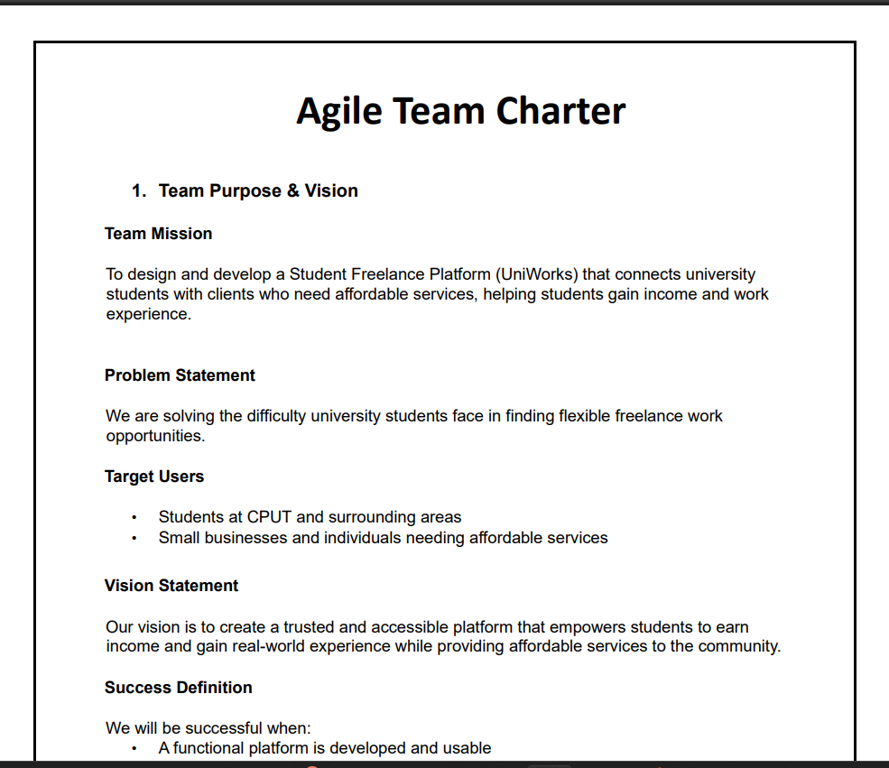
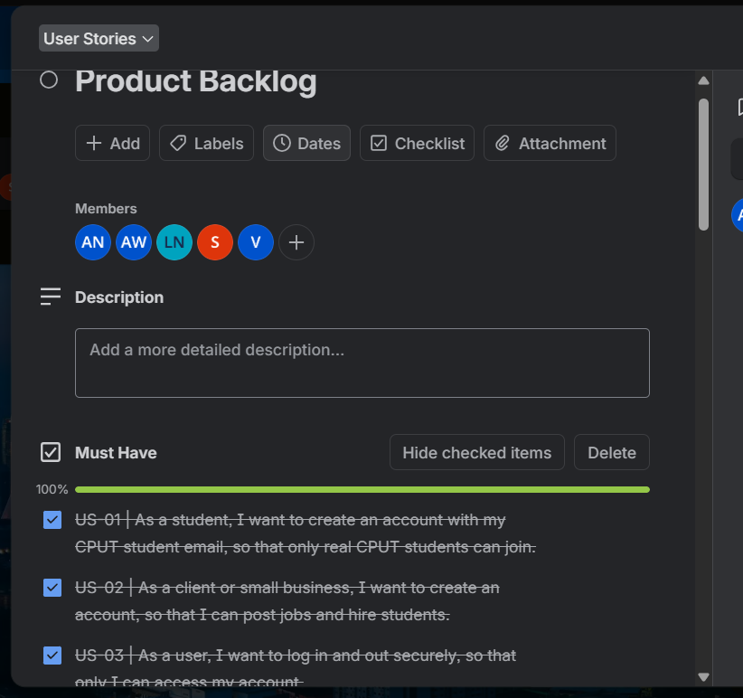
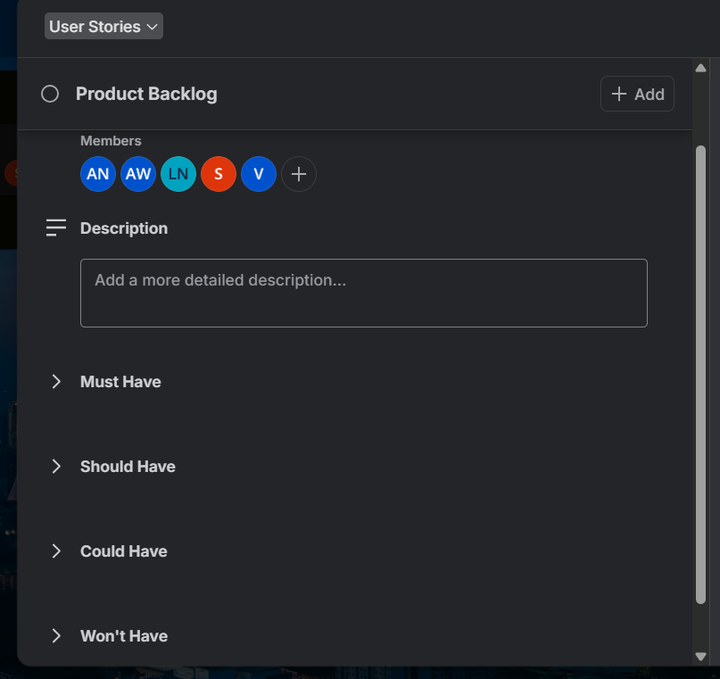
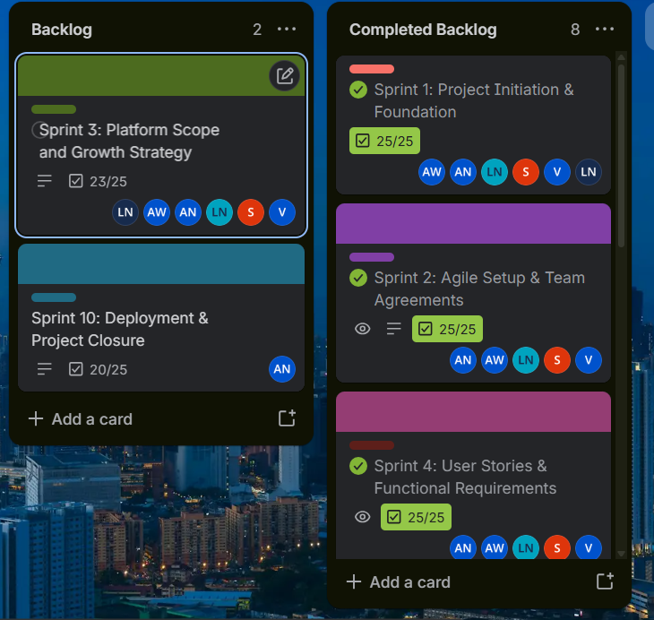
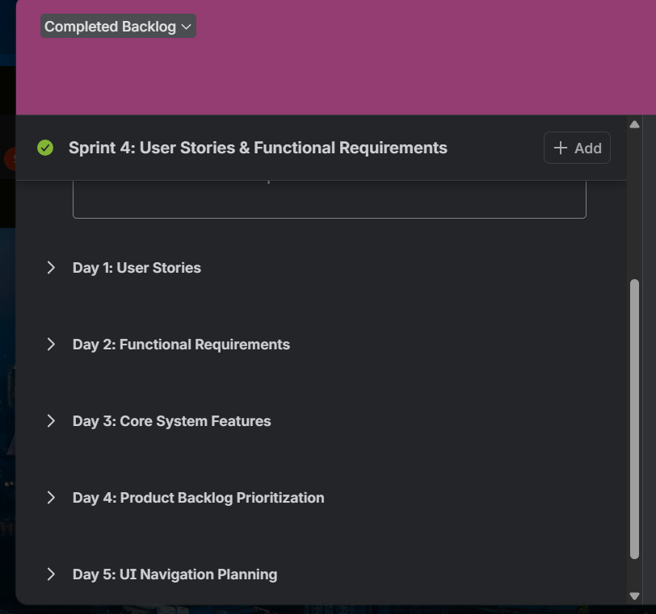
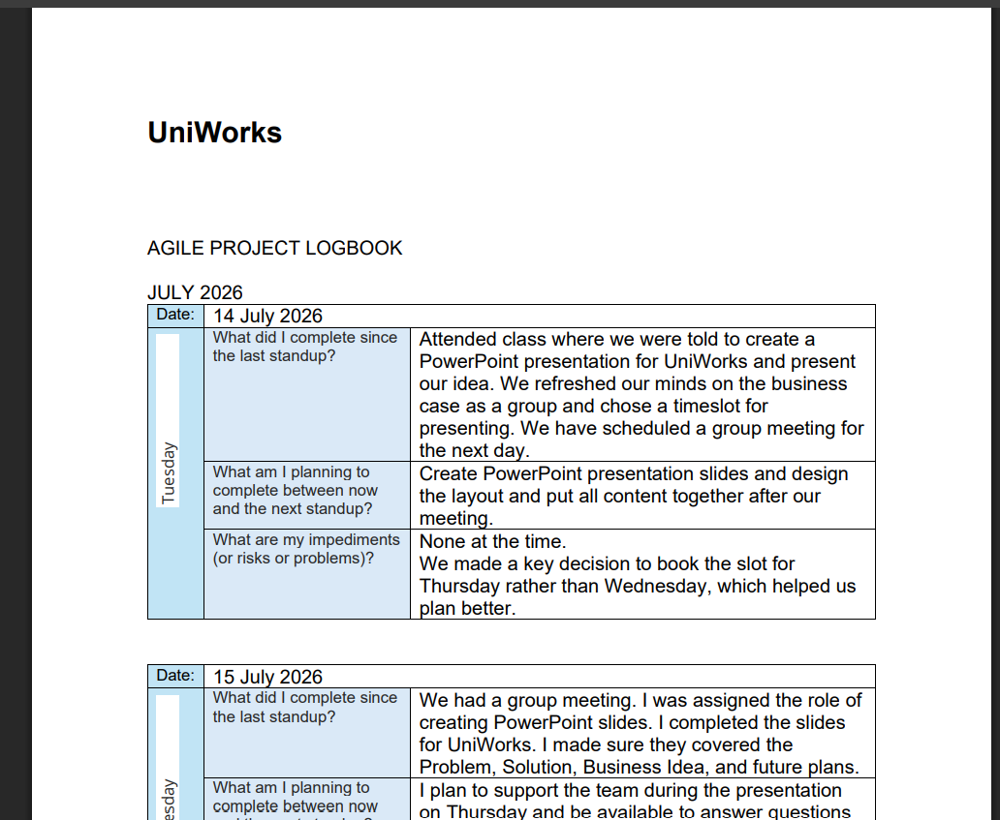

Programming & development
Java
JavaScript
SQL
HTML
CSS
Object-Oriented Programming
Full-stack fundamentals
MY DIGITAL PORTFOLIO ✿ 2026
Hello, I'm
ICT Applications Development student at Cape Peninsula University of Technology, passionate about building useful, user-focused software and growing through practical experience.
01 / ABOUT ME
I am a driven ICT Applications Development student with a foundation in software development, programming and problem-solving. I enjoy learning new technologies, working through technical challenges and collaborating to create applications that put users first.
I am currently looking for opportunities to gain practical industry experience and continue developing my technical and professional skills.
02 / WHAT I BRING
A snapshot of the technologies, working knowledge and people skills I bring to development work.
03 / EXPERIENCE & EDUCATION
Hands-on development and academic support experience across web and software projects.
Developing technical, analytical and collaborative skills through application development studies and practical projects.
PRP37XS Term 1 Professional Self-Marketing Assessment
Professional self-introduction and standard technical interview response.
Open Direct Link →My first-semester portfolio work helped me practise presenting my experience, reflecting on learning and publishing work online.
Reflection · STAR format
Situation — I was required to create a digital portfolio using Markdown on GitHub.
Task — My goal was to learn Markdown and present my CV and portfolio professionally.
Action — I researched Markdown syntax, practised formatting and structured the portfolio using headings, lists and links.
Result — I created a readable, well-structured portfolio and improved how I present information in a technical environment.
Reflection · Professional communication
Situation — I completed a mock interview as part of my professional self-marketing assessment.
Task — My objective was to introduce myself professionally, communicate my technical skills and practise answering interview questions.
Action — I prepared my responses, practised common interview questions and recorded a video presenting my skills and career aspirations.
Result — The activity helped me practise professional communication, build confidence and identify areas for improvement when presenting myself to potential employers.
Reflection · Publishing online
Situation — I needed to publish my portfolio using GitHub Pages.
Task — The goal was to make my portfolio accessible through a live website link.
Action — I configured GitHub Pages, selected the correct branch and checked that my README was formatted for web viewing.
Result — I published my portfolio online and gained practical experience implementing and sharing web-based content.
ENTREPRENEURIAL WIL
This section records my Agile project artefacts.
UniWorks is a proposed web-based student freelance marketplace that connects CPUT students with individuals and small businesses looking for affordable services. The idea responds to the difficulty students can face finding flexible work that fits around their studies, while giving clients a way to discover emerging talent. Students can present their study fields, skills, services and rates; clients can create accounts, post jobs and review suitable applicants. The intended value is a two-sided platform: students gain income, confidence and practical experience, while clients access affordable help. The project is being planned and developed using Agile practices, with user stories prioritised through MoSCoW and work tracked on Trello. Payments, premium tiers and automated payouts remain future-phase ideas rather than promises for this release.
Team purpose, roles, ways of working, communication and project agreements.
User-centred stories, acceptance criteria and the tasks that break each story into manageable work.
The prioritised list of features, requirements, improvements and work needed for UniWorks.
The work selected for a particular sprint, including tasks and progress toward its goal.
A dated record of work completed, next steps, blockers and sprint progress.
The charter sets out the UniWorks mission (a student freelance platform connecting CPUT students with clients who need affordable services), the five team roles, our values and how we planned to work.

Developing the Agile Team Charter helped me understand the importance of establishing clear expectations before starting a project. It allowed us to define our goals, team roles, communication methods, values and responsibilities. I learned that successful software development requires more than technical skills; it also depends on teamwork, accountability, planning and effective communication. Establishing these expectations at the beginning gave us a shared understanding of how we intended to work together and deliver the UniWorks project.
Although our charter identified risks such as miscommunication, missed deadlines and limited technical experience, I realised that identifying risks is not enough without practical solutions. As the project progressed, some members began industry placements and team participation decreased. This placed additional pressure on the remaining work and highlighted the importance of having a contingency plan. I learned that teams should prepare for unexpected changes by assigning backup responsibilities and ensuring that important tasks can continue even when a member becomes unavailable.
An example of this weakness occurred on 16 July, when our chosen presenter became unavailable and nobody was adequately prepared to take over. This situation showed me how depending too heavily on one person can disrupt project activities. If we had appointed a backup presenter and ensured that everyone understood the presentation, we could have handled the situation more effectively. In future projects, I would recommend assigning a primary and backup person to important responsibilities and keeping shared documents accessible to all team members.
Another lesson I learned was that having communication platforms such as WhatsApp and GitHub does not automatically guarantee effective communication. Team members must provide regular updates, communicate difficulties early and take responsibility for their assigned tasks. When communication becomes inconsistent, misunderstandings and delays can occur. I would improve this by introducing regular progress checks, keeping the Trello board updated and ensuring that every task has a clear owner and deadline. This would make it easier to identify problems early and redistribute work when necessary.
Looking back, I believe the charter should have been reviewed throughout the project instead of being treated as a document completed only at the beginning. Changes in team availability and project progress meant that our original arrangements needed to be reconsidered. During future projects, I would use retrospectives to evaluate our teamwork, discuss challenges and agree on specific improvements. I would also establish a clear process for resolving disagreements, managing missed deadlines and requesting assistance from the lecturer when problems cannot be resolved internally.
Overall, the experience taught me that a team charter is only effective when its agreements are consistently followed and adapted to changing circumstances. I developed a better understanding of accountability, risk management and the importance of shared responsibility. I also learned to recognise the value of planning for unexpected situations rather than assuming everything will proceed as expected. In future projects, I would communicate more proactively, monitor progress regularly and ensure that responsibilities are clearly defined. These lessons will help me contribute more effectively to team projects and prepare me for collaborative software development in a professional environment.

The complete, final product backlog contains 35 user stories. They are grouped by MoSCoW priority below; the wording records the intended requirements and does not by itself claim every feature was implemented.
| ID | Full user story / requirement | Priority |
|---|---|---|
| US-01 | As a student, I want to create an account with my CPUT student email, so that only real CPUT students can join. | Must Have |
| US-02 | As a client or small business, I want to create an account, so that I can post jobs and hire students. | Must Have |
| US-03 | As a user, I want to log in and out securely, so that only I can access my account. | Must Have |
| US-04 | As a student, I want to build a profile with my study field, course, skills, residential area and photo, so that clients can see what I offer. | Must Have |
| US-05 | As a user, I want to edit my profile details, so that my information stays correct. | Must Have |
| US-06 | As a user, I want to delete my account, so that I stay in control of my data. | Must Have |
| US-07 | As a client, I want to post a job with a title, category, description, budget and deadline, so that students know exactly what I need. | Must Have |
| US-08 | As a student, I want to browse and search jobs by category, so that I can find work I'm interested in. | Must Have |
| US-09 | As a student, I want to see jobs that match my skills and field of study, so that I don't waste time on irrelevant jobs. | Must Have |
| US-10 | As a student, I want to apply for a job with a short message, so that the client can consider me. | Must Have |
| US-11 | As a client, I want to view applicants and their profiles and accept or reject them, so that I can choose the right student. | Must Have |
| US-12 | As a client, I want to browse student services and rates by category, so that I can get affordable help. | Must Have |
| US-13 | As a student, I want my contact details hidden until a client is vetted, so that I'm protected from scams and unwanted contact. | Must Have |
| US-14 | As an admin, I want to vet and approve client accounts, so that only genuine clients can see student contact details. | Must Have |
| US-15 | As a user, I want to reset my password by email, so that I can get back into my account if I forget it. | Should Have |
| US-16 | As a user, I want to verify my email address, so that my account is secure. | Should Have |
| US-17 | As a student, I want to track the status of my applications (pending, accepted, rejected), so that I know where I stand. | Should Have |
| US-18 | As a client, I want to edit, close or delete my job posts, so that my listings stay accurate. | Should Have |
| US-19 | As a user, I want notifications when an application is received or its status changes, so that I can respond quickly. | Should Have |
| US-20 | As a user, I want to leave a review and rating after a job is completed, so that others can trust the people they work with. | Should Have |
| US-21 | As a client, I want to filter students by field, price and area, so that I can find an affordable match. | Should Have |
| US-22 | As an admin, I want to suspend or remove users and jobs, so that I can keep the platform safe. | Should Have |
| US-23 | As a client, I want to pay a hire fee securely through PayFast after accepting an application, so that the agreement is protected. | Should Have |
| US-24 | As a student, I want to upload samples of my work to my profile, so that I can prove my skills. | Should Have |
| US-25 | As a user, I want to report a suspicious profile or job, so that admins can act on it. | Should Have |
| US-26 | As a visitor, I want to read the terms and privacy policy before signing up, so that I know how my data is used. | Should Have |
| US-27 | As a client, I want to feature or boost my job listing, so that more students see it. | Could Have |
| US-28 | As an admin, I want a payments page to record fees received and payouts made, so that money is tracked. | Could Have |
| US-29 | As a student, I want to save jobs to come back to later, so that I can apply when I am ready. | Could Have |
| US-30 | As a student, I want email alerts when a new job matches my profile, so that I don't miss opportunities. | Could Have |
| US-31 | Student Premium (paid student tier) — later phase. | Won’t Have This Release |
| US-32 | Client Pro (paid client tier) — later phase. | Won’t Have This Release |
| US-33 | Placement fees and sponsorships — later phase. | Won’t Have This Release |
| US-34 | Automated payouts — later phase. | Won’t Have This Release |
| US-35 | Mobile app — later phase. | Won’t Have This Release |
| Stories | Frontend (Sprint 7) | Backend (Sprint 8) |
|---|---|---|
| US-01, US-02, US-03 Accounts and login | Day 2: Login and Registration pages, form validation, Forgot Password page, interface testing | Day 2: Student and Client models, registration and login functionality, user management testing |
| US-07, US-08 Posting and finding jobs | Day 4: Client Dashboard, Job Posting page, Applicant Management page | Day 3: Job Posting module, Job Categories, Job Search, Job Details page |
Writing user stories from the perspectives of students, clients and administrators helped me understand the importance of considering the needs of different users when developing a system. Instead of focusing only on the screens and features we wanted to build, I had to think about what each user needed to achieve and why that functionality was important. This helped me understand how user stories connect the business requirements to the actual features of the UniWorks platform. I also learned that clear user stories make it easier for a development team to understand the purpose of each feature and agree on what needs to be delivered.
The user stories were drafted during Sprint 4 and later broken down into development tasks across two sprints. The frontend tasks were planned for Sprint 7, while the backend tasks were planned for Sprint 8. This helped organise the workload by separating the interface from the server-side functionality. However, I realised that dividing the work in this way also created a dependency between the two parts. Completing a frontend screen did not necessarily mean the user story was finished, because the interface still needed to communicate correctly with the backend and database.
One example was the login functionality. Although the frontend and backend work could be developed separately, authentication could only be tested properly once the two parts were connected. My logbook records that I delayed the integration until the backend was working, meaning authentication only worked end to end on 23 September. This taught me that integration should not be left until the end of development. If the frontend and backend are developed separately for too long, problems such as incorrect API requests, unexpected responses and authentication errors may only be discovered late in the project.
If I were to approach this process again, I would prioritise completing one user story at a time, including its frontend, backend and database requirements wherever possible. I would also define clear acceptance criteria for every story before development begins and use them to check whether the functionality meets the intended requirements. Regular testing between the frontend and backend would help identify problems earlier, while updating the Trello board would make progress and outstanding tasks more visible to the team. This approach would improve coordination, reduce integration difficulties and make it easier to identify incomplete functionality before a sprint ends.
Overall, creating and organising the user stories taught me that successful Agile development requires more than listing features and assigning tasks. Each story needs to represent a genuine user need, have clear conditions for completion and be tested as part of the working system. I also learned that the way tasks are divided can affect how efficiently the team integrates and delivers functionality. In future projects, I would place greater emphasis on acceptance criteria, continuous integration and testing, and regular reviews of the backlog. These improvements would help me deliver features more incrementally and ensure that the final system meets the needs of its intended users.

The product backlog is one Trello card with four checklists: 14 Must have, 12 Should have, 4 Could have and 5 Won’t have items (35 in total). It was prioritised in Sprint 4 (Day 4) and estimated with story points in Sprint 5 (Day 2).
Creating the UniWorks product backlog helped me understand how important it is to prioritise features according to the value they provide to users. Using the MoSCoW prioritisation method allowed us to classify requirements as Must Have, Should Have, Could Have and Won't Have in this release. This encouraged me to think carefully about which features were essential to the purpose of the platform and which could be introduced later. I learned that a product backlog is not simply a list of ideas, but a planning tool that helps a team make informed decisions about what should be developed first.
Features such as account creation, user profiles, job posting, job applications and matching were classified as Must Haves because they support the main purpose of UniWorks: connecting students with clients offering work opportunities. Protecting student contact details until a client has been vetted was also important because the platform needed to consider user privacy and safety. This process taught me to evaluate requirements not only by how useful they might be, but also by how essential they are to the system's core functionality and the people who will use it.
The backlog also helped me recognise that not every useful feature needs to be included in the first release. Features such as payments, reviews and boosted listings were assigned lower priorities, while paid tiers were deliberately excluded from the current release. Although these features could improve the platform in the future, including too many requirements at once could delay the delivery of the essential functionality. I learned that managing scope involves making realistic decisions about what can be achieved within the available time and resources, rather than attempting to build every proposed feature immediately.
Having 35 user stories made the scope of UniWorks more visible, but it also highlighted the challenges of delivering a project with a team whose availability changed during development. As some team members became less available, the original workload became more difficult to manage. Looking back, I would assess the estimated effort and complexity of the Must Have stories against the team's actual capacity before finalising the sprint plans. I would also review the backlog whenever team availability or project requirements changed, allowing us to adjust priorities and focus on the most valuable work without losing sight of the project's main objectives.
Overall, developing the product backlog taught me that effective prioritisation requires continuous evaluation rather than a once-off decision. The MoSCoW method helped me distinguish essential requirements from features that could be postponed, while the size of the backlog showed me why realistic planning is necessary. In future projects, I would break larger stories into manageable tasks, estimate the effort required and review progress regularly with the team. This would help us make better use of our time, respond to unexpected challenges and deliver a functional product that meets its most important requirements before moving on to additional features.
Each sprint is a Trello card with five day-checklists of five tasks (25 per sprint). The board shows the Completed Backlog list with the sprint cards and their progress. The screenshots below document the sprint board and Sprint 4 planning.


Open the UniWorks Trello board ↗
| Sprint | Goal |
|---|---|
| 1 | Project Initiation & Foundation |
| 2 | Agile Setup & Team Agreements |
| 3 | Platform Scope and Growth Strategy |
| 4 | User Stories & Functional Requirements |
| 5 | Agile Estimation, Dependencies & Sprint Setup |
| 6 | UI/UX Design & Prototype Development |
| 7 | Frontend Development |
| 8 | Backend Development |
| 9 | Testing & Quality Assurance |
| 10 | Deployment & Project Closure |
Creating and managing the sprint backlog helped me understand how a large project can be divided into smaller tasks that are easier to organise, monitor and complete. Breaking the work into manageable daily tasks made progress more visible and gave the team specific items to discuss during stand-up meetings. The Trello board helped us track tasks according to their status and identify which activities were completed, still in progress or outstanding. I learned that a sprint backlog is useful not only for organising work, but also for creating accountability and helping the team understand what needs attention.
However, the sprint records also showed that progress did not always match the original plan. For example, Sprint 3, which focused on Platform Scope and Growth Strategy, recorded 18 completed tasks out of 25. The outreach template, target university list and strategy validation day remained incomplete. Recording these unfinished tasks was important because it provided an honest picture of the team's progress instead of suggesting that every planned activity had been achieved. This taught me that project documentation should reflect both achievements and shortcomings so that the team can identify gaps and make better decisions.
The original plan assumed that the team would complete ten sprints within a relatively consistent schedule. However, the campus shutdown from 18 August to 14 September interrupted this rhythm, while changes in team availability created further challenges. These disruptions affected the time available to complete tasks and made it more difficult to follow the original schedule. I learned that sprint planning must account for real-world circumstances and that a project plan should be flexible enough to accommodate unexpected interruptions without losing sight of the main objectives.
If I were to manage the sprints again, I would consider using shorter sprint cycles with realistic goals based on the team's availability and workload. At the end of each sprint, I would review completed and outstanding tasks, identify the reasons for delays and adjust the next sprint accordingly. I would also encourage team members to communicate difficulties as early as possible so that tasks could be reassigned or priorities changed when necessary. Keeping Trello updated throughout the sprint would make it easier to recognise problems early rather than discovering them when deadlines were approaching.
Overall, managing the sprint backlog taught me that effective Agile project management depends on continuous monitoring, communication and adaptation. A detailed plan can provide direction, but it cannot guarantee that every task will be completed as expected. The incomplete tasks in Sprint 3 and the disruption caused by the campus shutdown showed me the importance of realistic scheduling and regular replanning. In future projects, I would pay closer attention to team capacity, review progress consistently and use sprint retrospectives to identify improvements. These lessons will help me manage my workload more effectively and respond more confidently when a project does not proceed according to its original plan.
The logbook records dated stand-up entries (what I completed, what I planned next and what blocked me) from July to October 2026.

| Period | Highlights |
|---|---|
| 14–17 July | Pitch slides built. The agreed presenter became unavailable and nobody was prepared to step in, exposing a gap in our risk planning. |
| 21–31 July | Project planning, architecture discussion, Trello board draft, wireframes and page allocation. |
| 4–14 August | Frontend coding began, GitHub repository set up, brand guide presented on 7 August. Group membership changed. |
| 18 Aug–14 Sept | Campus shutdown; academic activities on hold. |
| 15–23 September | Work resumed with the frontend almost complete. Backend built, then connected to the frontend; user authentication worked by 23 September. |
| October | Other modules and travel with poor network slowed progress. I missed the live website submission but finished the development. |
This logbook taught me that time management is not just about making a timetable; it is about following it consistently, checking progress honestly and adjusting early when circumstances change. During the campus shutdown, I did not maintain the level of independent work that the project needed. When academic activities resumed, I had to catch up while also managing other modules. That pressure contributed to missing the live submission deadline, even though I continued working to complete the development. I learned that a shutdown or break from classes should not automatically become a break from personal project progress. A small, realistic weekly target would have been more useful than relying on a large catch-up period later.
The logbook also helped me understand the difference between individual effort and team delivery. Our group made progress on the idea, presentation, wireframes, architecture and Agile planning. However, the project was affected when availability changed and communication became less consistent. The charter had identified miscommunication and missed deadlines as risks, but we did not have a strong enough contingency plan for redistributing responsibilities. In future, I would make sure that every important task has a named owner and a backup person, and that blockers are raised while there is still time to respond. I would also make sprint commitments based on the members who are actively available, rather than assuming the original team capacity will remain unchanged.
From a technical perspective, the project showed me that a feature is not complete simply because its screen or its backend component exists. The pieces need to work together, and the result must be checked against the original requirement. The work from frontend planning through backend integration made the value of incremental development clearer to me. Next time, I would connect a small end-to-end feature earlier, test it, and then build on it, rather than leaving integration until later. This would help reveal problems sooner and make progress easier to demonstrate.
I am proud that I continued working on UniWorks and that the project developed from a business idea into documented requirements, a backlog, sprint plans, interface work and backend development. I also learned to be more realistic about my own capacity and to communicate sooner when I am behind. If I repeated this project, I would begin implementation earlier, review my weekly progress every Friday, keep the Trello board current, and reserve dedicated time for testing, evidence capture and submission preparation. These changes would improve both the quality of the product and the reliability of my delivery. Overall, the experience strengthened my understanding of Agile planning, accountability, requirements, collaboration and the discipline needed to turn an idea into a working software product.
Evidence labels are a reminder to verify and complete the portfolio before submission. Only describe work as completed when you have supporting evidence.
THANK YOU FOR VISITING
This portfolio represents my learning journey, current skills and the practical work I am building on as an aspiring software developer.